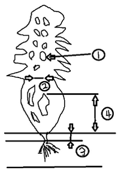
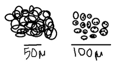
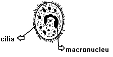
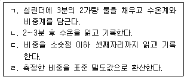

수산양식산업기사 (2015-08-16 기출문제)
1과목: 어류양식
1. 다음 어류 중 산란수가 가장 많은 어류는?
- 개복치
- 연어
- 방어
- 은어
(정답률: 76%)

2. 미꾸리의 종묘생산에 대한 설명으로 옳지 않은 것은?
- 뇌하수체 호르몬 주사에 의한 인공채란법에 의한다.
- 5월부터 8월 사이에 주로 산란한다.
- 암컷은 가슴지느러미가 길고 끝이 날카로운 모양이다.
- 성숙란의 색은 황색이며 반투명하다.
(정답률: 75%)
3. 다음 중 감성돔 양식에서 부화 직후의 먹이로 가장 좋은 것은?
- 규조류와 남조류
- 굴의 트로코포라와 D상 유생
- 키토세라스와 세네데스무스
- 녹조류와 홍조류
(정답률: 60%)
4. 참돔 자어 사육 시 사용하는 동물먹이생물은?
- 이스트
- 로티퍼
- 클로렐라
- 마이크로시스티스
(정답률: 69%)
5. 잉어의 산란용 친어관리로 적합하지 않은 것은?
- 산란용 친어는 3~4월경에 암수를 분리한다.
- 산란용 친어의 먹이는 단백질과 지방이 적은 것이 좋다.
- 암컷은 산란기가 가까워지면 가슴지느러미 가장자리의 큰 줄기에 거친 돌기가 나타난다.
- 산란용 친어를 분리 수용할 때 건강상태를 관찰하여 수용하는 것이 좋다.
(정답률: 64%)
6. 넙치 알의 특성이 옳은 것은?
- 분리 부성란
- 응집성 부성란
- 분리 침성란
- 부착성 침성란
(정답률: 80%)
7. 다음 중 태생 관상어류가 아닌 것은?
- 거피
- 소드테일
- 플래티
- 제브러 다니오
(정답률: 60%)
8. 양식 사료의 펠릿 사료를 제작할 때 점착제로 첨가되지 않는 것은?
- 셀룰로오스
- CMC(carboxy methyl cellulose)
- 알기네이트(alginate)
- 아스타크산틴(astaxanthin)
(정답률: 50%)
9. 수중 영양 염류의 함량이 생산 증가에 도움이 될 수 있는 양식법은?
- 유수식 어류 양식
- 정수식 지중 양식
- 가두리 잉어 양식
- 순환여과식 뱀장어 양식
(정답률: 42%)
10. 순환여과식 사육장치의 구성요소가 아닌 것은?
- 사육조
- 침전조
- 생물 여과조
- 원형지
(정답률: 72%)
11. 넙치의 부화자어가 변태를 할 때의 일반적인 몸길이로 가장 적당한 것은?
- 3~6mm
- 7~9mm
- 11~14mm
- 15~20mm
(정답률: 62%)
12. 농어 종묘 생산에 있어 친어 및 채란에 대한 설명 중 옳지 않은 것은?
- 난은 침성부착란이고 수정란 1.2~1.45mm의 무색투명한 구형이다.
- 채란에 이용하는 암컷은 체중 3~8kg, 체장 40~65cm, 수컷은 체중 1~2kg, 체장 30~45cm의 범위이다.
- 어미 한 마리당 채란양은 체중에 따라 다르나 50~100만개 내외이다.
- 암컷 한 마리에 수컷 2~3마리의 비율로 건식법에 의해 수정시킨다.
(정답률: 47%)
13. 금붕어의 초기 선별 기준으로 가장 좋은 것은?
- 체색
- 두장/체장
- 체고/체장
- 꼬리형태
(정답률: 75%)
14. 다음 중 잉어 그물 가두리 양식을 위한 적지가 될 수 없는 것은?
- 수심 2.5~3m 이내로 비교적 얕은 곳
- 수초(水草)가 많이 번식하지 않은 곳
- 겨울에도 수온이 4℃ 이상 유지되는 곳
- 영양염이 풍부하지 않은 곳
(정답률: 58%)
15. 다음 중 양식 사업을 하기 위하여 가장 먼저 고려해야 할 사항은?
- 생물의 종류
- 성장도
- 수요
- 사료문제
(정답률: 73%)
16. 다음 중 무지개송어 자어가 견딜 수 있는 염분 농도로 가장 적절한 것은?
- 14 ‰까지
- 15~20 ‰
- 21~25 ‰
- 26~30 ‰
(정답률: 50%)
17. 양식용 뱀장어의 종묘를 구하는 방법 중 주로 사용되는 것은?
- 바다에서 하천으로 소상하는 것을 채포
- 자연 채란에 의한 방법
- 인공 채란에 의한 방법
- 바다의 해초 밑에 있는 것을 채포 사용하는 방법
(정답률: 79%)
18. 다음 중 참돔 양식사료의 적정 단백질 함량으로 가장 적합한 것은?
- 10% 이하
- 45%
- 20~30%
- 70%
(정답률: 47%)
19. 감성돔 양식에 대한 설명으로 적합하지 않은 것은?
- 감성돔은 자웅 동체형 웅성 선숙어이다.
- 감성돔의 산란 시기는 4~7월이다.
- 감성돔의 알은 분리 부성란이다.
- 감성돔 친어에게 주는 먹이는 불포화지방산이 적은 먹이가 적당하다.
(정답률: 57%)
20. 다음 중 복어의 수송 방법으로 가장 적합한 것은?
- 가는 철사로 입술을 꿰매거나, 앞니를 뺀 후 운반하는 방법
- 마취제를 사용하여 수송하는 방법
- 저면에 비닐을 깔고 피부가 건조되지 않도록 해서 포화습도 상태로 수송하는 방법
- 작은 상자에 1마리씩 넣거나, 상자 내에 칸막이를 설치하여 수송하는 방법
(정답률: 60%)
2과목: 무척추동물양식
21. 패류의 채묘 방법 중 잘못 짝지어진 것은?
- 참굴 - 고정식 채묘
- 피조개 - 침설 수하식 채묘
- 바지락 - 완류식 채묘
- 대합 - 침설 고정식 채묘
(정답률: 75%)
22. 우리나라 연안에서 참굴의 전기채묘와 관련한 설명으로 옳은 것은?
- 전기채묘는 모두 단련종묘로 사용한다.
- 창원, 거제만 등이 대표적인 곳이다.
- 만내 수심이 비교적 깊은 곳에서 산란한다.
- 5월 하순부터 7월 중순 사이가 적당하다.
(정답률: 44%)
23. 다음 중 참굴유생의 부유기간에 가장 영향을 미치는 것은?
- 영양염
- 산
- 수온
- 비중
(정답률: 80%)
24. 다음 중 귀매달기식으로 양성할 수 있는 종류는?
- 전복
- 성게
- 참가리비
- 소라
(정답률: 71%)
25. 전복에 대한 설명으로 옳지 않은 것은?
- 전복의 부유 유생 기간에는 먹이를 먹지 않는다.
- 전복의 먹이 효율은 크기가 작을수록 높다.
- 전복의 먹이 성장률은 녹조류,갈조류,홍조류의 순이다.
- 전복은 초식성이며 야행성 동물이다.
(정답률: 47%)
26. 우리나라에서 종굴을 단련하기 시작하는 시기는?
- 5~6월
- 7월~8월
- 9~10월
- 11~12월
(정답률: 47%)
27. 다음 중 알에서 부화한 유생이 올챙이형(tadpole larva)유생기를 거치는 동물은?
- 우렁쉥이
- 보리새우
- 해삼
- 꽃게
(정답률: 73%)
28. 우렁쉥이의 양성을 위해 알맞은 양성법은?
- 수하식 양성
- 조위망식 양성
- 그물차단식 양성
- 육상수조식 양성
(정답률: 73%)
29. 우리나라의 동해안에서 양식하기에 가장 알맞은 전복의 종류는?
- 시볼트전복
- 둥근전복
- 말전복
- 참전복
(정답률: 85%)
30. 대하의 성숙, 산란에 관한 설명이 잘못된 것은?
- 암컷은 수컷과 교미한 후 정협을 받아 저정낭에 저장한다.
- 암·수 구별은 몸 크기로 한다.
- 암·수 구별은 교미 후 나타나는 교미전의 유무로 한다.
- 가을에 교미하고 이듬해 봄에 산란한다.
(정답률: 44%)
31. 다음 중 생활사가 바르게 나열된 것은?
- 해삼:아우리쿨라리아 → 돌리오라리아 → 새끼해삼
- 진주조개:벨리져 → D형유생 → 성숙유생 → 치패
- 꽃게:조에아 → 미시스 → 메갈로파 → 치게
- 보리새우:조에아 → 노플리우스 → 미시스 → 치하
(정답률: 58%)
32. 가리비유생과 관계가 가장 먼 것은?
- 수정난은 5~7일 후면 D형 유생이 된다.
- D형 유생은 부착생활을 한다.
- 수정 후 15~17일이 경과하면 각정기유생(170~220㎛)이 된다.
- 수정 후 30~40일 후면 성숙유생(230~280㎛)이 된다.
(정답률: 66%)
33. 서식장의 환경변화에 가장 강한 종류는?
- 백합
- 우럭
- 참굴
- 가리비
(정답률: 78%)
34. 부화 직전의 꽃게 외란의 색으로 가장 적절한 것은?
- 검은색
- 황색
- 암색
- 황백색
(정답률: 56%)
35. 다음 중 전복 양식용 먹이로서 먹이 효과가 가장 좋은 해조는?
- 톳
- 미역
- 갈파래
- 애기풀가사리
(정답률: 72%)
36. 전복 종묘생산 중 치패의 폐사율이 가장 높은 시기는?(오류 신고가 접수된 문제입니다. 반드시 정답과 해설을 확인하시기 바랍니다.)
- 담륜자기
- 피면자기
- 주구각이 생길 무렵
- 부유기
(정답률: 77%)
37. 다음 먹이생물 중 조개류의 피면자유생의 먹이생물이 아닌 것은?
- Pavlova lutheri
- Chaetoceros calcitrans
- Cyclotella nana
- Skeletonema costatum
(정답률: 60%)
38. 보리새우의 제방식 양성장에 황화수소가 발생하였을 때 대처 방법 중 가장 적당한 것은?
- 조석회 살포
- 산화철제 투입
- 데리스 뿌리 분말 투입
- 살조제 살포
(정답률: 76%)
39. 무척추동물의 식성에 대한 설명으로 옳지 않은 것은?
- 보리새우 미시스기-요각류
- 닭새우 필로소마기-알테미아
- 해삼류의 부유유생기-식물플랑크톤
- 1,2년생 성게류-소형 새우류
(정답률: 61%)
40. 전복, 굴, 진주담치, 피조개, 백합, 바지락 등에 공통적으로 이용될 수 있는 양식 방법은?
- 뜸틀식 수하양식법
- 나뭇가지 양식법
- 가두리 양식법
- 바닥 양식법
(정답률: 71%)
3과목: 해조류양식
41. 다음 중 김 양식 관리 시 알맞은 발의 노출수위는?
- 대조 시 주간 4~5시간 노출선
- 대조 시 주간 5~6시간 노출선
- 소조 시 2~4시간 노출선
- 소조 시 4~6시간 노출선
(정답률: 45%)
42. 톳의 증식을 위한 잡 해조 제거에 알맞은 시기는?
- 최성장기 직전인 이른 초봄
- 톳을 채취한 직후인 봄
- 어린 유체가 나타나는 늦가을
- 난과 정자의 방출 직전인 겨울
(정답률: 39%)
43. 다음 중 김의 생육에 가장 적당한 비중은?
- 1.0⑤~1.010
- 1.015~1.020
- 1.020~1.025
- 1.025~1.030
(정답률: 52%)
44. 감태의 조락기와 세엽상부의 형성 시기는?
- 조락기: 9~10월, 세엽상부 형성기: 10~12월
- 조락기: 9~12월, 세엽상부 형성기: 1~2월
- 조락기: 가을~겨울, 세엽상부 형성기: 4~5월
- 조락기: 7~8월, 세엽상부 형성기: 1~2월
(정답률: 64%)
45. 미역의 말기배양 시 배우체가 성숙 및 수정하여 아포체로 발아한다. 이 아포체를 가이식하려면 어느 정도의 크기로 발아한 것이 가장 적절한가?
- 5㎛
- 50㎛
- 500㎛
- 5,000㎛
(정답률: 33%)
46. 해수 유동이 김에 미치는 영향과 가장 거리가 먼 것은?
- 영양염 및 이산화탄소의 공급
- 배출된 대사 노폐물의 제거
- 활발한 대사 작용의 유지
- 광합성율의 감소
(정답률: 76%)
47. 미역의 가이식에 관한 설명이 틀린 것은?
- 해수의 온도가 21℃ 이하로 내려가면 한다.
- 해면 아래 2~4m에 한다.
- 아포체로의 성장을 촉진시키기 위한 것이다.
- 조류의 소통이 안 되는 내만인 곳을 택해야 한다.
(정답률: 63%)
48. 다음 중에서 세대교번을 하지 않는 종류는?
- 홑파래
- 청각
- 미역
- 김
(정답률: 49%)
49. 김 사상체 닭살병의 주된 원인은?
- 해수 중의 영양염 부족
- 탄산칼슘의 침착
- 호염성 세균감염
- 규조류의 부착
(정답률: 43%)
50. 다시마의 어미줄 관리 시 4~5월에 10m 정도의 깊이에 두는 경우가 있는데 그 이유로 가장 적합한 것은?
- 이끼벌레 무리의 부착 방지를 위해서이다.
- 너무 강한 광선을 피하기 위해서이다.
- 높은 수온을 피하기 위해서이다.
- 색택을 좋게 하기 위해서이다.
(정답률: 65%)
51. 다음의 그림은 1년생 다시마의 형태이다. 내용의 연결이 잘못된 것은?

- 용무늬(그림① )
- 중대부(그림② )
- 줄기의 길이(그림③ )
- 유주자 주머니가 생기는 하한선(그림④ )
(정답률: 47%)
52. 풀가사리류 중에서 질이 가장 우수한 종류는?
- 풀가사리
- 불등가사리
- 애기풀가사리
- 실풀가사리
(정답률: 56%)
53. 미역 배우체의 생장 적온은?
- 17~20℃
- 20~30℃
- 23~25℃
- 25~27℃
(정답률: 55%)
54. 붉은 갯병이 발생하기 쉬운 환경이 아닌 것은?
- 10℃이하
- 12~15℃이상
- 발의 노출이 적은 소조시
- 하천수 유입이 계속 많을 때
(정답률: 54%)
55. 김의 씨발을 냉장할 때 그물을 밀봉하는 봉지가 불투명하게 되는 경우는?
- 건조상태가 부족한 때
- 건조가 너무 많이 된 때
- 저장온도가 너무 높은 때
- 저장온도가 너무 낮은 때
(정답률: 40%)
56. 다음 그림과 같은 김병해가 일어날 수 있는 환경은?

- 저염분 지역
- 공장페수 유입 지역
- 외양수의 영향이 강한 고염분 지역
- 풍랑이 적은 내만 안쪽이나 하구 어장
(정답률: 58%)
57. 우리나라에서 가장 중요한 양식김으로 재배성이 우수한 양식품종은?
- 둥근김
- 둥근돌김
- 모무늬김
- 방사무늬김
(정답률: 52%)
58. 김 사상체 성장이 억제되는 수온은?
- 15℃
- 20℃
- 24℃
- 27℃
(정답률: 30%)
59. 다음 해조류 중에서 한해성인 종류는?
- 김
- 미역
- 다시마
- 진두발
(정답률: 40%)
60. 냉장 김발을 제작하기에 적합한 김 엽체의 길이는?
- 1cm 내외
- 2cm 내외
- 3cm 내외
- 4cm 내외
(정답률: 43%)
4과목: 수산생물
61. 다음 중 어류의 회유조사를 위한 표지방법이 아닌 것은?
- 체부분 표지법
- 착색법
- 표지 부착법
- c.p.u.e법
(정답률: 56%)
62. 동물 분류학상 태형동물문(Bryozoa)에 속하는 종류는?
- 브라키오누스(Brachionus)
- 꽃다발이끼벌레류(Bagula)
- 개맛(Lingula)
- 우렁쉥이(Halocynthia)
(정답률: 55%)
63. 다음 수산 생물 중에서 광염성 생물은?
- 오징어
- 망둥어
- 우뭇가사리
- 가리비
(정답률: 44%)
64. 다음 중 분류학상 가장 고등한 동물은?
- 극피동물
- 연체동물
- 척색동물
- 절지동물
(정답률: 42%)
65. 다음 중 제주도에서 많은 생산량을 보이며 다년생인 해조류는?
- 매생이
- 돌김
- 꼬시래기
- 감태
(정답률: 43%)
66. 바지락의 서식에 가장 알맞은 곳은?
- 조간대에서만 서식한다.
- 조간대에서 2~3m 수심까지 담수가 유입하는 사니질 해안
- 조간대에서 2~3m 수심까지의 니질 해안
- 조간대에서 3~5m 수심의 사질 해안
(정답률: 50%)
67. 녹조류가 얕은 곳에 많고 홍조류가 깊은 곳에 많이 생육하는 이유는?
- 녹조류는 강광을 선호하고, 홍조류는 약광을 선호하므로
- 녹조류는 고온에서 성장을 잘하고, 홍조류는 저온에서 성장을 잘하므로
- 녹조류는 녹색광을 광합성에 이용하기 어려우나, 홍조류는 녹색광을 광합성에 이용할 수 있으므로
- 홍조류는 단일조건을 선호하고, 녹조류는 장일조건을 선호하므로
(정답률: 46%)
68. 절지동물문 갑각강에 속하는 동물플랑크톤으로 세계의 거의 모든 해역에서 가장 우점하는 생물은?
- 지각류
- 요각류
- 단각류
- 곤쟁이류
(정답률: 53%)
69. 다음 중 미역의 포자체에서 생겨나는 생식세포는?
- 배우자
- 중성포자
- 유주자
- 수정란
(정답률: 63%)
70. 식물 플랑크톤에 대한 설명으로 틀린 것은?
- 식물 플랑크톤 중 먹이생물로 중요한 종류는 규조류와 황갈편조류이다.
- 규조류와 황갈편조류는 일반적으로 연안역이나 용승해역에는 존재하지 않는다.
- 미세 플랑크톤은 1차 생산력의 80% 이상을 차지한다.
- 미세 플랑크톤에는 부유성 균류와 부유성 원생동물의 일부가 포함된다.
(정답률: 59%)
71. 다음 중 원구류가 아닌 것은?
- 칠성장어
- 먹장어
- 붕장어
- 다묵장어
(정답률: 47%)
72. 모악동물(화살벌레)의 설명 중 옳지 않은 것은?
- 몸은 머리, 몸통, 꼬리의 세 부분으로 나뉘어 있다.
- 이들은 턱 주변의 강한 털로서 먹이를 잡는다.
- 대부분이 담수산이며 담수산 동물 플랑크톤에서 중요하다.
- 해양 환경을 파악하는 지표 생물로 이용되기도 한다.
(정답률: 58%)
73. 다음 중 경골어류의 특징이 아닌 것은?
- 척색은 거의 경골화된 등뼈로 대치되어 있으며, 뇌는 5개의 부분으로 나누어진다.
- 처음 출현한 것은 이첩기 이후이다.
- 대부분의 종은 피부를 보호하는 비늘이 있다.
- 새열은 4~5쌍이며 아가미뚜껑으로 덮여 있다.
(정답률: 45%)
74. 다음 해조류들 중 광합성 동화산물이 다른 것은?
- 청각
- 미역
- 매생이
- 가시파래
(정답률: 50%)
75. 분류학상 연체동물에 속하기 않는 것은?
- 해파리류
- 조개류
- 고둥류
- 문어류
(정답률: 62%)
76. 알긴산의 채취 원료가 되는 것은?
- 파래
- 청각
- 다시마
- 김
(정답률: 50%)
77. 파래류에 대한 설명으로 가장 거리가 먼 것은?
- 파래류는 조간대 바위, 돌, 나무 등에 붙어산다.
- 연중 볼 수 있는 보편적인 녹조식물이다.
- 암수생식기를 형성하여 유성생식을 한다.
- 영양염 유입이 많은 조간대 상부에 주로 번성한다.
(정답률: 52%)
78. 다음 중 해조류의 수평분포를 결정하는 주요 환경요소는?
- 광선
- 염분
- 수온
- 수심
(정답률: 44%)
79. 일반적으로 해양에서 수직회유(vertical migration)의 의미는?
- 식물 플랑크톤이 하루의 낮 동안 저층으로 이동하고 밤 동안 표층으로 이동하는 것을 의미함
- 동물 플랑크톤이 하루의 낮 동안 저층으로 이동하고 밤 동안 표층으로 이동하는 것을 의미함
- 저서동물이 하루의 낮 동안 저층으로 이동하고 밤 동안 표층으로 이동하는 것을 의미함
- 저서성 어류가 하루의 낮 동안 저층으로 이동하고 밤 동안 표층으로 이동하는 것을 의미함
(정답률: 63%)
80. 수산생물의 분포를 지배하는 요인이 아닌 것은?
- 수온 및 염분
- 해류 및 심도
- 발생시기의 차이
- 먹이의 질과 양
(정답률: 60%)
5과목: 수질분석 및 양식생물
81. 넙치의 랍도바이러스병 예방책으로 가장 적당한 것은?
- 포르말린 처리
- 식염수 처리
- 15℃ 이상 가온 처리
- 담수 처리
(정답률: 47%)
82. 아래 그림과 같은 병원체의 이름은?

- Ichthyophthirius
- Trypanosoma
- Chilodonella
- Trichodina
(정답률: 46%)
83. 은어 종묘를 방양하여 양식하는 도중 먹이 섭취가 불향하고 폐사가 만성적으로 일어나기 때문에 폐사어를 관찰하였더니 아가미 뚜껑사이로 주머니 모양을 한 것이 발견되었다면 다음 중 무엇의 감염에 의한 것인가?
- Caligus sp.
- Pseudoergasilus sp.
- Salmonicola sp.
- Argulus sp.
(정답률: 47%)
84. 양식장 수질 분석법 중 Diazo-화법으로 알 수 있는 수질 성분은?
- 암모니아태 질소
- 아질산태 질소
- 질산태 질소
- 유리태 질소
(정답률: 43%)
85. 부화 후의 양식새우 세균성 질병의 원인균은?
- Vibrio sp. Pseudomonas sp. Aeromonas sp.
- Streptococcus sp. Staphylococcus sp. Micrococcus sp.
- Flexibacter sp. Bacillus sp. Salmonella sp.
- Subtilus sp. Spirillum sp. Zoogloea sp.
(정답률: 49%)
86. 시료수를 유리병에 넣고 보존해서는 안 되는 항목은?
- 용해성 인산
- 질산성 질소
- pH
- 규산염
(정답률: 52%)
87. 어류 병원체와 그 부화자충의 연결이 맞게 짝지어진 것은?
- nematoda - miracidium
- cestoda - coracidium
- digenea - oncomiracidium
- copepoda – cercaria
(정답률: 38%)
88. 암모늄 이온, 아질산 이온, 유기체 질소의 조사를 위한 시료의 현장에서 처리하는 방법으로 옳은 것은?
- 황산을 가하여 pH를 2 이하로 되게 한다.
- 운반도중 자연증발이 일어나지 않게 하는 것이 제일 중요하다.
- 수산화나트륨을 가하여 pH 10 이상이 되도록 한다.
- 어떤 시약도 첨가해서는 안되고 반드시 냉장상태로 운반해야 한다.
(정답률: 49%)
89. 혐기성 박테리아나 원생동물의 역할로 분해 되어 발생하는 생성물과 가장 거리가 먼 것은?
- H2S
- CH4
- NH3
- NO3
(정답률: 55%)
90. 미생물에 의해 분해되기 쉬운 시료는 어떻게 보존해야 가장 좋은가?
- 0℃ 이하 냉암소 또는 Chloroform, 황산구리 및 염화 제2수은을 사용
- 5℃ 이하 냉암소 또는 Chloroform, 황산구리 및 염화 제2수은을 사용
- 10℃ 이하 냉암소 또는 Chloroform, 황산구리 및 염화 제2수은을 사용
- -10℃ 이하 냉암소 또는 Chloroform, 황산구리 및 염화 제2수은을 사용
(정답률: 39%)
91. 뱀장어의 적점병은 초여름에 유행되는 질병인데 점상출혈이 나타나는 증상이다. 이 출혈은 어떤 조직에 나타나는가?
- 피하에 출혈된다.
- 근육에 출혈된다.
- 지느러미에 나타난다.
- 내부 장기에 나타난다.
(정답률: 40%)
92. 연어, 송어류의 사료 함량 중 가장 적당한 탄수화물사료 첨가량은?
- 어체중 kg 당 1 일 40% 이상
- 어체중 kg 당 1 일 30% 이상
- 어체중 kg 당 1 일 9~12% 이상
- 어체중 kg 당 1 일 4.5~6.0%
(정답률: 41%)
93. 다음 중에서 바르게 짝지어진 것으로 볼 수 없는 사항은?
- Chilodonella 증 – 섬모충 – 10℃
- Ichthyobodo 증 – 편모충 – 10℃
- Ichthyophthirius 병 – 포자충 – 여름
- Myxidium 증 – 포자충 – 5~8월
(정답률: 41%)
94. 뱀장어의 기적병(嗜赤病)을 일으키는 병원균(病原菌)은 다음 중 어느 것인가?
- Paracolobacterum anguillimortiferum
- Aeromonas hydrophila
- Edwardsiella tarda
- Vibrio anguillurum
(정답률: 58%)
95. 다음 중 물의 오염지표로서 가장 중요한 것은?
- 동 · 식물플랑크톤
- 암모니아태 질소
- 탄산가스
- 알칼리도
(정답률: 49%)
96. 양어장에서 pH와 용존산소는 어떤 관계가 있는가?
- 용존산소가 증가하면 pH도 증가한다.
- 용존산소가 감소하면 pH도 증가한다.
- 용존산소가 증가하면 pH는 감소한다.
- pH와 용존산소는 일정한 관계가 없다.
(정답률: 60%)
97. 다음 시약 중 질산은 적정법으로 염분을 적정할 때 필요하지 않은 것은?
- AgCl
- AgNO3
- K2CrO4
- NaCl
(정답률: 43%)
98. 시료수를 약 4시간 거리에 있는 실험실까지 운반하여 측정하게 될 때 채수현장에서 고정 조작을 하여야 측정에 정확도를 높일 수 있는 조사 항목은?
- 생물화학적 산소 소비량
- 세균 조사
- 용존 산소량
- 염분량
(정답률: 45%)
99. 잉어의 피부에 감염되어 피부에 발적과 궤양을 형성하며, 뱀장어의 아가미에 감염된 경우에는 아가미에 영양체가 만들어짐으로 아가미 뚜껑을 닫을 수 없게 되는 것은?
- 사프로레그니아(Saprolegnia)
- 더모시스티움(Dermocystium)
- 아파노마이세스(Aphanomyces)
- 브란키오마이세스(Branchiomyces)
(정답률: 34%)
100. 염분을 비중측정법으로 측정하는 순서이다. 내용 중 옳지 않은 것은?

- ㄱ
- ㄴ
- ㄷ
- ㄹ
(정답률: 43%)
이유: 개복치는 산란기가 길어서 1년에 2~3번 정도 산란을 한다. 또한 산란시에는 암컷이 수십만 개에서 수백만 개의 알을 낳기 때문에 산란수가 가장 많은 어류 중 하나이다.